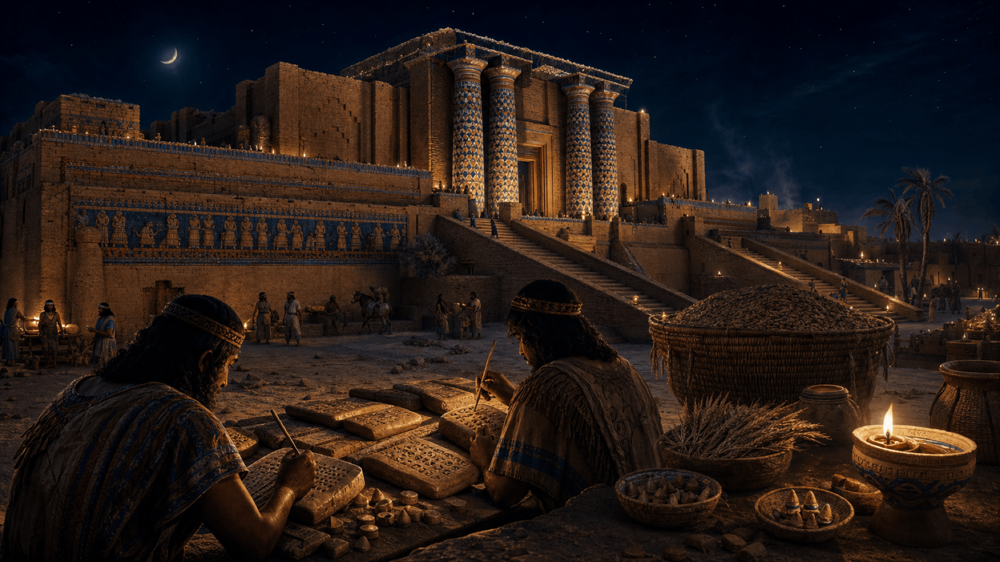
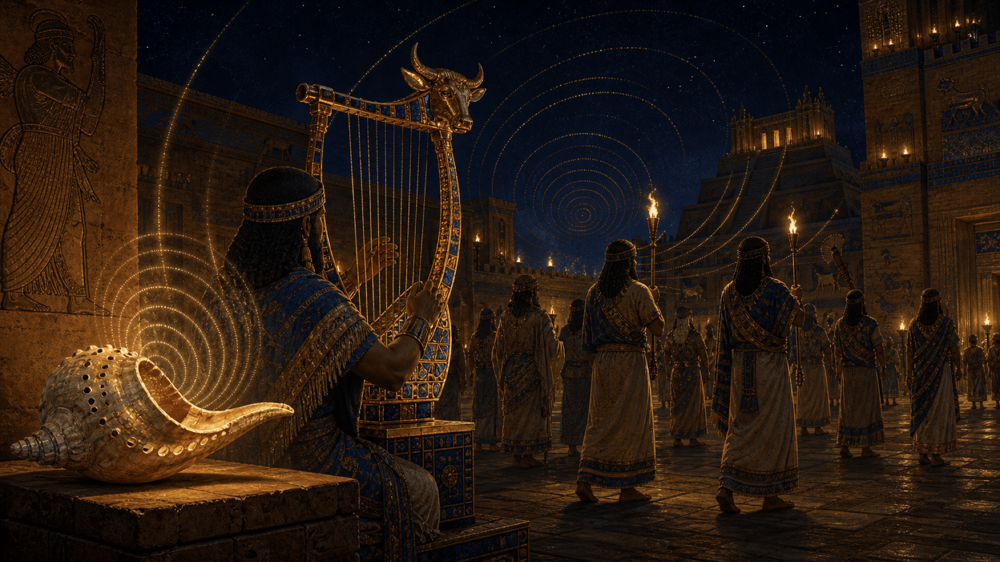
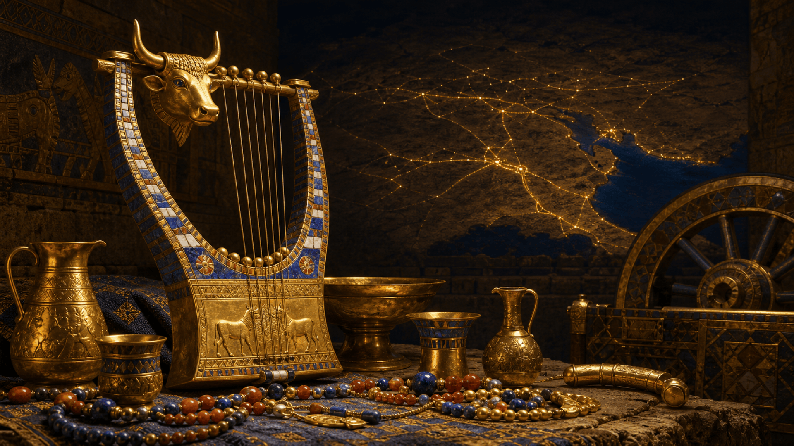
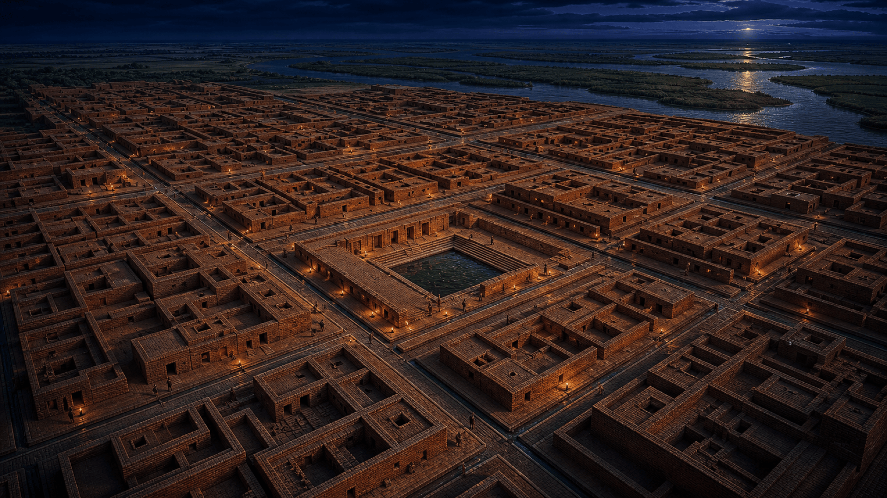
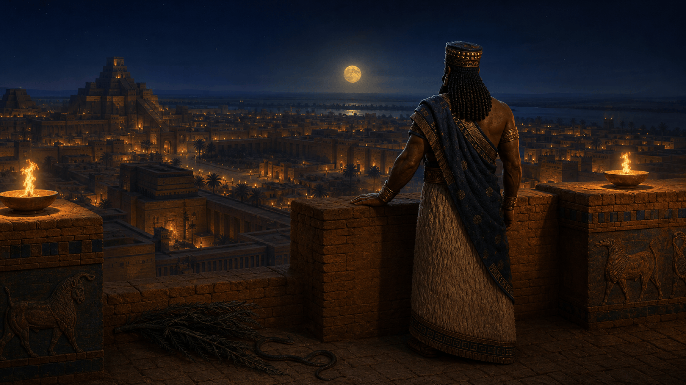
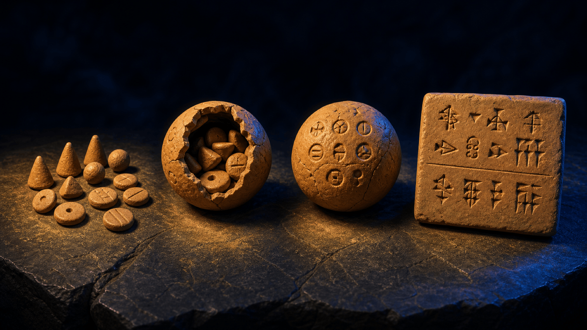

I. Introduction : Le basculement historique
- La ville comme anomalie historique face au nomadisme millénaire.
- Objectif : Analyser le passage au "logiciel social" (pouvoir, surplus, hiérarchisation).
Dossier XVIII · Archéologie & pouvoir
Uruk, Ur, Mohenjo-Daro, Jéricho : il y a 5 000 ans, l'humanité a quitté la liberté nomade pour s'enfermer derrière des murailles — et inventer, par nécessité, l'écriture, l'impôt et le récit qui nous gouvernent encore.
« Les Premières Cités : Le code source de notre monde. »
Le fil conducteur
Il y a cinq mille ans, dans le sable de la Mésopotamie, des dizaines de milliers d'inconnus ont dû apprendre à vivre ensemble. Pour ne pas s'effondrer, ils ont inventé l'écriture, l'impôt, le temple-banque et le mythe qui légitime tout cela. Ce dossier suit ce basculement — d'Uruk à Mohenjo-Daro — et conserve la transcription du live mot pour mot.
Jéricho — sédentarisation et muraille : la sécurité, bien avant l'écriture.
Uruk — l'écriture naît pour compter les stocks. Naissance de l'administration.
Mohenjo-Daro & Caral — urbanisme planifié, ici et à l'autre bout du monde.
Ur III — le droit écrit (code d'Ur-Nammu) et le commerce-monde.
Pourquoi la ville est une anomalie dans l'histoire humaine — et ce que ce confort nous a coûté en liberté.
« Grand village » et « cité organisée » : ce que les archéologues mesurent réellement, dates à l'appui.
Le mythe, l'écriture et le temple comme technologies sociales — le « code source » qu'on n'a jamais désinstallé.
Sommaire


I. Introduction
Bonjour à toutes et à tous, et bienvenue dans ce nouveau live !
Prenez un instant pour regarder autour de vous. Que vous soyez dans votre chambre à Nantes, à Montréal en train de prendre les transports, ou confortablement installés chez vous à New York, Tokyo ou ailleurs... nous vivons tous la même chose : le quotidien de la ville. Le bruit de la circulation, les administrations, les règles communes, le fait de dépendre de gens qu'on ne connaît même pas pour avoir accès à l'eau, à l'électricité ou à la nourriture. Pour nous, c'est une évidence. C'est la norme.
Pourtant, si l'on prend l'échelle de toute l'histoire de l'humanité, ce mode de vie est une anomalie totale. Pendant des centaines de milliers d'années, nos ancêtres ont vécu en petits groupes nomades, en totale autonomie, sans frontières, sans chefs autoproclamés et sans gratte-ciels pour cacher le ciel.
Alors, quand est-ce que tout a basculé ? Pourquoi, soudainement, au IVe millénaire avant notre ère, l'être humain a-t-il décidé d'abandonner cette liberté pour s'enfermer derrière des murailles, pour se soumettre à une autorité centrale et pour inventer, par nécessité, l'écriture et l'impôt ?
Ce soir, on ne va pas parler de la modernité technologique, mais de son origine. On va remonter aux racines, dans le sable brûlant de la Mésopotamie, pour comprendre la naissance des premières cités-États. On va explorer comment, en passant de la terre à cultiver à la cité à protéger, l'humanité a littéralement créé le "logiciel" social sur lequel nous fonctionnons encore aujourd'hui.
C'est une histoire de pouvoir, de surplus agricoles, d'invention et de hiérarchisation. Une histoire qui explique pourquoi votre vie, en 2026, est le résultat direct de ce qui se passait il y a 5 000 ans dans des cités comme Uruk ou Ur.
Installez-vous confortablement, le voyage dans le temps vers les premières fondations de notre civilisation commence maintenant !
I. Définition de la « Cité »
Attention, avant d'aller plus loin : un petit rappel de rigueur. Dans ce live, nous allons parler de 'premières cités', mais restons prudents. Le titre de 'plus vieille ville du monde' est souvent un outil marketing ou, dans les textes antiques, une stratégie politique pour légitimer la puissance d'une cité. Pour les archéologues, ces dates sont des états provisoires de la connaissance. La distinction entre un 'grand village' et une ''ville''est une interprétation scientifique qui évolue avec chaque nouvelle fouille. Ne voyez pas ces dates comme des records immuables, mais comme des étapes dans un processus global de complexification humaine.
Pour éviter les confusions, il est crucial de préciser que nous ne parlons pas ici de n'importe quel regroupement humain. Le passage au stade de "cité" au IVe millénaire av. J.-C. répond à des critères archéologiques et sociologiques stricts.
A. L'excédent agricole : Le fondement technologique
La cité ne peut exister sans un surplus calorique stable. Grâce à la maîtrise de l'irrigation (canalisation des crues du Tigre et de l'Euphrate), les populations ont pu générer une production céréalière dépassant leurs besoins immédiats.
B. La spécialisation sociale : La division du travail
Dans un village néolithique, chaque individu est largement autonome. Dans une cité, une structure pyramidale apparaît :
C. La centralisation : Le temple et le palais
La cité-État se définit par la présence d'un centre névralgique :
D. L'urbanisme : L'organisation de l'espace
Une cité se distingue par une densité élevée et une délimitation claire (murailles). L'espace n'est plus seulement naturel ou familial ; il devient public, géré par une autorité qui définit les règles de circulation et de propriété.
Utilisons l'analogie du "logiciel social" : le village est un système d'exploitation simple, la cité est un système multi-tâches complexe qui nécessite un processeur central (le pouvoir) pour éviter que le système ne plante.
II. Le berceau

II. Le berceau : Uruk (Le modèle sumérien)
[Accroche visuelle : Reconstitution d'une Ziggourat ou plan cadastral d'Uruk]
« Après avoir défini ce qu'est une cité, plongeons dans le "laboratoire" originel : Uruk, en Basse-Mésopotamie (Irak actuel). C'est ici, au IVe millénaire avant notre ère, que tout se cristallise. »
A. La première métropole de l'Histoire
B. L'invention de l'écriture : L'outil administratif
C. Le roi-prêtre et la redistribution
Insistons sur le fait qu'Uruk est une invention purement pragmatique : les citoyens ne sont pas devenus plus "intelligents", ils ont simplement dû créer des outils techniques pour gérer la complexité qu'ils avaient eux-mêmes générée par leur sédentarisation massive.
III. La mythologie
III. Le rôle de la mythologie et la légitimation du pouvoir
Pour maintenir une société aussi complexe et hiérarchisée qu'Uruk, la force physique ne suffit pas : il faut une idéologie qui justifie l'ordre social. C'est ici que le mythe intervient, non pas comme une simple croyance, mais comme un véritable outil de cohésion et de légitimation politique.
Quand on étudie ces textes, il faut faire comme les historiens, par exemple Jean-Jacques Glassner : on ne lit pas ces récits comme des faits historiques, mais comme des constructions. Quand la Liste royale sumérienne dit que
''La royauté descendit du ciel sur Eridu''
Ce n'est pas de l'histoire, c'est de la propagande. Eridu cherche à s'imposer comme le centre sacré face à d'autres cités
| Cité | Nature de l'innovation | Note de rigueur |
|---|---|---|
| Jéricho | Sédentarisation défensive | Occupé dès le IXe millénaire av. J.-C.. |
| Uruk | Administration étatique | Modèle de cité-temple vers 3500 av. J.-C.. |
| Mohenjo-Daro | Urbanisme sanitaire | Développement autonome en vallée de l'Indus. |
| Ur | Institutionnalisation juridique | Émergence comme cité-hub au IIIe millénaire av. J.-C. |
A. Le Roi comme médiateur divin
B. L'Épopée de Gilgamesh : Une mise en abyme
C. Le rôle de la structure narrative
C'est le moment idéal pour faire le pont avec votre collectif, "L'Empire Contre-Intox". Vous pouvez expliquer que la mythologie, à l'époque, servait de "cadre de vérité" indiscutable. Aujourd'hui, nous avons remplacé ces récits par des institutions ou des idéologies, mais la fonction reste la même : structurer le groupe pour assurer sa survie.
IV. Mythe & Pouvoir
IV. Le lien entre Mythe et Pouvoir : La Théocratie Économique
Dans les premières cités, le mythe n'est pas une "croyance" isolée de la réalité matérielle ; il est l'infrastructure même du système politique.
A. L'organisation du "Domaine du Dieu"
B.Le Temple comme "Banque Centrale"
C. Le Roi, médiateur et garant
D. La cité comme microcosme de l'ordre cosmique
Posons-nous cette question : "Pensez-vous qu'aujourd'hui, nos États utilisent encore des récits mythologiques pour justifier leurs systèmes économiques ?"
Cela permet de lier l'histoire ancienne de notre travail sur le rationalisme et la désintoxication de l'information.
La musique

Par le plus grand des hasards, sur Arte jeudi soir, je suis tombée sur un documentaire. Hasard ou pas, la musique dans les premières cités. Voici ce que j'en ai retenue.
Pour comprendre comment Uruk ou Ur sont devenues des machines sociales si efficaces, il faut regarder au-delà des briques et des tablettes. Il faut se pencher sur ce qui résonnait dans les rues :
LA MUSIQUE
I.La partition invisible : Le son, premier langage de la cité.
A. Le son comme "protocole de coordination.
Dans une cité de 50 000 habitants, comment synchroniser des milliers de personnes sans haut-parleurs ni médias de masse ? La réponse est acoustique. La musique n'est pas un divertissement, c'est une technologie de coordination. Le rythme des percussions et les mélodies des hymnes imposent une cadence aux processions et aux rites collectifs. C'est la première manière de "synchroniser" les comportements humains à grande échelle. La musique est le langage que tout le monde comprend, bien avant que l'écriture ne devienne accessible à une élite.
B. L'instrument comme "objet-code.
Regardez les découvertes archéologiques, comme la conque de Marsoulas (18 000 ans) ou les célèbres Lyres d'Ur (IIIe millénaire av. J.-C.). Ce ne sont pas des objets de décoration. Ce sont des "objets-codes".
C. La musique comme "écriture éphémère" .
C'est ici le point crucial pour notre réflexion : avant que les scribes ne gravent le cunéiforme sur l'argile pour compter les grains, les musiciens "gravaient" les mythes dans la mémoire collective via les chants.
D. La cité : une architecture sonore.
Les premières cités étaient des caisses de résonance. Entre les murs épais des temples et la réverbération des places publiques, chaque cité avait son identité sonore. Le pouvoir a compris très tôt que contrôler le son, c'est contrôler l'espace public. Chaque rite, chaque moment de la vie politique, était réglé comme une partition. La cité est, au sens propre, une architecture où le son et la loi se répondent. »
II.Une ingénierie de la précision
On a tendance à penser que la musique c'est juste de l'émotion. En Mésopotamie, c'est de l'ingénierie sociale. C'est le premier "logiciel" qui a permis de faire tenir ensemble des populations qui n'avaient aucun lien de parenté entre elles. »
Ce que Carole Fritz et Guillem Flury ont révélé, c'est que la musique est une forme de technologie de pointe appliquée au sacré. Lorsque nous parlons de l'invention de l'écriture à Uruk pour gérer les stocks de grains, nous ne devons pas oublier que l'humain avait déjà inventé une autre forme d'écriture, sonore celle-là, pour gérer la cohésion de son groupe et sa relation au sacré. La cité n'est pas née dans le silence, elle est née dans une partition sonore réglée, où le musicien et le scribe partageaient une même mission : organiser le chaos pour créer une société durable
Technologie sociale
« Soyons clairs : on a tendance à regarder les Sumériens avec condescendance, comme s'ils étaient des gens crédules vivant dans le sable. C'est une erreur fondamentale. En réalité, ils ont inventé le levier de contrôle le plus puissant de l'Histoire.
1. La fiction comme outil de gestion
À Uruk, le prêtre n'était pas un illuminé, c'était un ingénieur social. Il a compris une chose simple : pour qu'une société de 50 000 personnes ne s'effondre pas dans le chaos, il faut un récit commun qui dépasse l'individu. Le mythe sumérien n'est pas une croyance, c'est une fiction nécessaire pour maintenir l'ordre productif. Ils ont créé une structure où le grain que vous donniez au temple ne vous était pas volé : il était "sanctifié". Vous ne payiez pas un impôt, vous participiez à la survie du cosmos. C'est du génie de manipulation, pur et simple.
2. Le "Legacy" (l'héritage) que nous subissons
Le problème, c'est que ce logiciel, on ne l'a jamais désinstallé. Regardez nos sociétés en 2026 : croyez-vous vraiment que nous avons abandonné cette logique ? Une monnaie, une frontière, une idéologie politique... ce sont exactement les mêmes "mythes structurants". Le jour où tout le monde décide de ne plus croire en la valeur du billet de banque, le système s'écroule, exactement comme une cité sumérienne dont les habitants auraient cessé de croire en leur Dieu-protecteur.
3. Le combat de "L'Empire Contre-Intox"
Notre boulot, avec le collectif, c'est de regarder ce code source en face. On ne cherche pas à démolir la société, on cherche à identifier quelle part de notre réalité est faite de faits mesurables et quelle part est faite de récits qu'on nous impose. La différence entre un habitant d'Uruk et un citoyen d'aujourd'hui ? Lui n'avait pas le choix. Nous, on a l'outil pour faire de la rationalité : le debunking, l'analyse critique, la vérification des sources.
Alors, on va vous reposer la question, et soyez honnêtes :
Quels sont les récits qui nous dirigent aujourd'hui, et lesquels d'entre eux ne sont que des "bugs" du système que nous devrions corriger ? »
Pour rester strictement objective et éviter les écueils théologiques tout en conservant notre rigueur scientifique, on se doit de déplacer le curseur du spirituel vers le fonctionnel.
L'idée est de présenter la religion/le mythe comme une technologie sociale ou un outil organisationnel. Voici comment formuler cela de manière neutre, factuelle et efficace :
I.L'approche "Technologie Sociale" (Neutralité Objectivante)
A. Définir le mythe comme un "Protocole de coordination"
« Pour comprendre ces cités, il faut sortir de la lecture religieuse. En archéologie et en anthropologie, on ne regarde pas si ces récits sont "vrais" ou "faux". On regarde leur fonction. Dans une société de milliers de personnes, il faut un moyen de coordonner les actions de chacun. Le mythe agit ici comme un protocole de coordination : il fournit un langage commun et des valeurs partagées qui permettent à des inconnus de coopérer sans avoir à se connaître personnellement. »
B. Le mythe comme "Logiciel d'infrastructure"
« Au lieu de parler de religion, parlons d'organisation administrative. Pour construire un canal d'irrigation de 20 kilomètres ou gérer des tonnes de grain, il faut une autorité qui légitime l'effort collectif. Les tablettes d'Uruk nous montrent que cette légitimité passe par le sacré. C'est une solution technique à un problème de gestion humaine. Le temple, ce n'est pas seulement un lieu de prière, c'est le siège de la comptabilité et de la logistique de la cité. C'est le "bureau central" de l'économie sumérienne. »
C. Le parallèle avec les structures modernes (sans polémique)
« Si on veut éviter de parler de religion, regardons ce qu'il reste de ce système aujourd'hui. Nous avons remplacé le cadre mythologique par des cadres institutionnels. Aujourd'hui, ce qui permet à des millions de personnes de vivre ensemble, ce n'est pas forcément un dieu, c'est le Droit, les contrats, la monnaie ou le civisme. Ce sont nos "récits structurants". Ce que les Sumériens ont inventé, ce n'est pas la religion, c'est la hiérarchie institutionnelle pour gérer la complexité. »
"Nous n'analysons pas la validité des croyances, on tente d'expliquer comment ces systèmes ont mécaniquement permis à la ville de fonctionner."
II. L'éclat

[Accroche visuelle : Carte des routes commerciales du Golfe Persique, photo d'objets en lapis-lazuli ou or provenant des Tombes Royales]
Après Uruk, le laboratoire, voici Ur, le géant du commerce. Si Uruk était la cité de l'invention administrative, Ur est celle de la puissance économique et de l'expansion.
A. Une position géographique stratégique
B. La stratification sociale : L'archéologie de l'inégalité
C. L'administration de la richesse
Soulignons que Ur est le passage de la "cité-productrice" à la "cité-hub". Le commerce force Ur à être plus rigoureuse, plus organisée et, inévitablement, plus inégalitaire.
III. L'alternative

III. L'alternative : Mohenjo-Daro (L'urbanisme de l'efficacité)
[Accroche visuelle : Plan de la ville avec son réseau orthogonal (en damier) et vue des systèmes d'évacuation d'eau]
« Nous avons vu Uruk et Ur, les géants de Mésopotamie. Mais il est crucial de sortir de cette vision unique. À environ 2 500 kilomètres de là, dans la vallée de l'Indus (Pakistan actuel), une autre civilisation a inventé la cité, mais avec une "logique de système" radicalement différente. »
A. Un urbanisme orthogonal (Le plan en damier)
B. L'obsession de l'hygiène et de l'eau
C. Le contre-modèle : Jéricho (L'alternative défensive)
Utilisons cette partie pour montrer que la "civilisation" n'est pas un chemin unique. Uruk a choisi la hiérarchie sacrée ; Mohenjo-Daro a choisi l'urbanisme et l'hygiène publique ; Jéricho a choisi la sécurité défensive. Il n'y a pas un seul modèle, mais des réponses différentes à des problèmes de survie différents.
Les Cités
LES CITES
I. Comment nous les avons découvertes (Les sources archéologiques)
Imaginezl'archéologie comme une enquête judiciaire :
II .Traduction du nom des cités-états
"La montée en complexité"
| Cité | Moteur de développement | Innovation majeure |
|---|---|---|
| Jéricho | Défense | L'enceinte fortifiée |
| Uruk | Gestion de la masse | L'écriture comptable |
| Mohenjo-Daro | Efficacité publique | L'urbanisme orthogonal (égouts) |
| Ur | Souveraineté politique | Le Droit (loi écrite) |
Dataviz · interactive
Sur l'axe du temps réel : Jéricho précède de loin les cités-États. Cliquez une cité.
Dates : occupation et phase d'innovation (points pâles = occupation antérieure). Jéricho fortifiée ~8000 av. J.-C. ; Uruk écriture ~3300 ; Mohenjo-Daro ~2600 ; Ur III ~2100. Sources : British Museum, Penn Museum, UNESCO.
Les fiches
Jéricho (La précocité défensive)
Uruk (La pionnière sumérienne)
Mohenjo-Daro (La planification orthogonale)
Ur (La puissance commerciale)
La conscience politique

Uruk n'est pas qu'une prouesse administrative de chiffres et de stocks, c'est aussi le berceau de la conscience politique mésopotamienne. Une fois que la machine est lancée, que les scribes ont compté les grains et que le temple a structuré la société, il reste une question que aucune tablette de comptabilité ne peut résoudre : celle de la place de l'homme dans cet ordre nouveau. C'est ici, au cœur des murailles d'Uruk, que naît le premier grand récit de l'humanité : l'Épopée de Gilgamesh.
Gilgamesh, roi légendaire d'Uruk (vers 2600 av. J.-C.).
A-Le récit de Gilgamesh : La transition humaine
B-Pourquoi cet emplacement ?
Placer Gilgamesh après Uruk permet de passer de la "ville physique" (l'urbanisme, les structures sociales) à la "ville intellectuelle" (la culture, la littérature, la philosophie). On visite d'abord les murs d'Uruk, puis on découvre les questions existentielles qui animaient ceux qui les habitaient.
C-Rationalisme et scepticisme
nous conclurons cette partie en rappelant que, malgré le caractère mythologique du récit, les assyriologues (comme Jean Bottéro) ont permis une approche rigoureuse et scientifique de ces tablettes.
L'Épopée de Gilgamesh est considérée comme l'une des plus anciennes œuvres littéraires de l'humanité. Voici les éléments clés sur ses sources et son histoire :
1. Origines archéologiques : Les tablettes de Ninive
Le récit que nous connaissons aujourd'hui provient principalement de la bibliothèque du roi assyrien Assurbanipal (668-627 av. J.-C.), située à Ninive. Ces tablettes, découvertes au XIXe siècle par l'archéologue Hormuzd Rassam, sont conservées au British Museum.
2. Évolution du récit
3. Références universitaires pour la lecture
Pour une approche rigoureuse et commentée du texte, plusieurs traductions de référence sont couramment citées par les chercheurs :
Ces ouvrages permettent de replacer le texte dans son contexte historique (le règne d'un roi légendaire d'Uruk vers 2600 av. J.-C.) et d'analyser son influence majeure, notamment sur les récits du Déluge que l'on retrouve plus tard dans la Bible.
Il est important de préciser qu'il n'existe pas un texte unique et définitif, mais une reconstitution moderne basée sur les fragments retrouvés. L'Épopée de Gilgamesh est un récit composite qui a évolué sur plus de 1 500 ans.
Voici un résumé des éléments narratifs essentiels qui structurent le texte standard des douze tablettes :
Si vous souhaitez étudier le texte pour votre live, je vous recommande vivement de consulter la traduction de Jean Bottéro ou celle de R.J. Tournay et A. Schaffer, qui sont les références universitaires pour accéder à la structure précise de ces tablettes.
le passage le plus célèbre et le plus poignant : celui où Gilgamesh, face à la mort d'Enkidu, réalise la finitude de toute chose.
Extrait : La lamentation de Gilgamesh sur Enkidu
« Ô toi, mon frère, mon ami ! Nous avons gravi les montagnes, nous avons terrassé le Gardien de la Forêt, nous avons abattu le Taureau du ciel ! Et aujourd'hui, qu'est devenue ta force ?
Depuis que tu n'es plus, je ne dors plus. La terreur a envahi mes membres, et la mort, cette ombre glacée, rôde autour de moi. Comment pourrais-je me taire ? Comment pourrais-je oublier ?
Je vais errer dans les steppes, je vais chercher celui qui a survécu au Déluge. Je veux apprendre le secret de la vie, je veux briser les chaînes de la mort. Car si l'homme est fait de poussière, ne peut-il pas, par ses actes, bâtir quelque chose qui ne périra jamais ? »
Convergence
III.L'Humanité, une expérience globale
Si la Mésopotamie est le laboratoire que nous connaissons le mieux, le reste du globe faisait exactement la même chose, au même moment, sans aucun contact entre eux."
On pourrait croire que l'urbanisation est un phénomène limité au Croissant Fertile. C'est une erreur de perspective. Au même moment, à l'autre bout du monde, l'humanité inventait aussi la cité."
A. La civilisation Caral-Supe (Pérou)
Considérée comme la plus ancienne civilisation des Amériques, elle remet en question nos perceptions sur l'urbanisme précoce.
B. Le Néolithique en Chine (Culture de Longshan)
L'urbanisation chinoise ne s'est pas faite en un jour, et la culture de Longshan (env. 3000–1900 av. J.-C.) dans la vallée du fleuve Jaune est un tournant majeur.
C. Les sites précurseurs du Levant
Avant même les cités-États mésopotamiennes, le Levant a connu des formes d'urbanisation très anciennes, parfois qualifiées de "précoces".
Quelques axes de réflexion pour notre live :
En ajoutant ces exemples, nous avons essayer de renforcer notre démonstration sur deux points :
L'écriture

L'ECRITURE
L'invention de l'écriture ou la "déportation de la mémoire"
"Pourquoi pense-t-on que c'est du hasard ?
« On entend souvent dire que l'écriture est apparue par "génie" ou par hasard. C'est une vision romantique qui occulte la réalité archéologique. L'écriture n'est pas le fruit de l'inspiration, mais une nécessité de gestion. »
1. Le "Pourquoi" : L'échec de la mémoire humaine
Dans une cité comme Uruk, on ne gère plus quelques familles, mais des dizaines de milliers de personnes.
2. Le "Comment" : La démonstration archéologique (L'évolution)
Nous avons retrouvé les preuves matérielles de cette "programmation" pas à pas. C'est ce que les chercheurs (notamment Denise Schmandt-Besserat) ont théorisé comme la "théorie des jetons".
3. Comment les chercheurs savent que ça fonctionne ?
4. Importance : Le basculement de l'humanité
« Ceux qui pensent que c'est le hasard ne regardent pas les faits. L'écriture est une technologie de réduction de l'incertitude. Elle a été inventée pour que la cité ne s'effondre pas sous le poids de sa propre complexité.
Aujourd'hui, quand on parle de "Big Data" ou de "Cloud", on fait exactement la même chose que les Sumériens : on cherche des méthodes pour gérer une quantité d'informations qui dépasse nos facultés biologiques. L'écriture n'est pas un don divin, c'est une mise à jour logicielle majeure de notre espèce. »
Dataviz · interactive
La « déportation de la mémoire » en quatre étapes — cliquez pour avancer.
Chronologie d'après Denise Schmandt-Besserat (University of Texas) : jetons 8000–3000, bulle & empreinte ~3500, tablettes à empreintes ~3200, pictogrammes ~3100 av. J.-C.
Conclusion
« Nous arrivons au terme de notre analyse. Ce que nous avons exploré aujourd'hui, ce n'est pas seulement de l'archéologie, c'est la source de notre propre fonctionnement.
Pour construire ce raisonnement, nous nous sommes appuyés sur les fondations posées par des décennies de recherches archéologiques. Nous avons cité les travaux de Denise Schmandt-Besserat, qui a démontré avec précision le passage des jetons comptables aux tablettes cunéiformes. Nous avons évoqué les fouilles de Leonard Woolley à Ur et les découvertes de Kathleen Kenyon à Jéricho, qui ont permis de transformer des récits anciens en preuves matérielles tangibles. Comme l'ont montré les travaux de Julius Jordan sur le quartier de l'Eanna à Uruk, ces cités ne sont pas le fruit du hasard : elles sont le résultat d'une ingénierie sociale complexe.
Nous avons vu comment, il y a 5 000 ans, nos ancêtres ont inventé des solutions radicales à des problèmes inédits :
Ces cités — qu'il s'agisse d'Uruk, d'Ur ou de Mohenjo-Daro — n'étaient que le premier acte d'une pièce beaucoup plus vaste. En créant ces systèmes, en inventant l'administration, le droit et le récit structurant, ces populations ont déclenché une dynamique irréversible : la montée en puissance de la complexité.
Mais cette croissance a un prix. Très vite, la cité ne suffit plus. Le besoin de sécuriser davantage de ressources, de dominer les routes commerciales, d'imposer son "code" à ses voisins, va pousser ces cités à fusionner, à s'étendre, à se transformer.
C'est là que nous nous arrêterons aujourd'hui. Car si la cité est le berceau de la civilisation, elle devient très vite le moteur de quelque chose de plus grand, de plus vaste, et parfois de bien plus destructeur : l'Empire.
C'est précisément ce saut dans l'échelle, ce passage de la gestion d'une ville à la domination d'un territoire entier, que nous explorerons lors de notre prochain live consacré aux "Premiers Empires". Comment le passage du "Dieu de la cité" au "Roi des rois" a-t-il redéfini la liberté et le pouvoir ? C'est ce que nous décortiquerons ensemble avec l'équipe de L'Empire Contre-Intox.
Merci à tous pour votre rigueur et votre participation. Restez critiques, restez curieux, et on se retrouve très vite pour la suite . »
Appareil critique
Pour nos lives, nos sources proviennent de l'archéologie expérimentale ou de l'épigraphie (l'étude des inscriptions anciennes). Cela souligne que notre travail ne repose pas sur des "opinions", mais sur l'analyse de preuves matérielles :
"On ne spécule pas, on travaille à partir de la documentation archéologique. Par exemple, les travaux de Denise Schmandt-Besserat sur les calculi ne sont pas une interprétation mystique, mais le résultat d'un inventaire physique réalisé sur des milliers d'objets retrouvés dans les strates archéologiques."
Les ouvrages de référence (Les "incontournables")
Ressources en ligne (Fiables et accessibles)
Ce dossier conserve mot pour mot la transcription du live. D'Uruk à Mohenjo-Daro, de la première tablette comptable au premier grand récit littéraire, une même idée traverse tout : pour faire tenir ensemble des inconnus, l'humanité a écrit du « code » — l'écriture, le temple, le droit, le mythe. Ce logiciel, on ne l'a jamais désinstallé. Le travail de l'Empire Contre-Intox commence là : regarder ce code source en face, séparer les faits mesurables des récits qu'on nous impose.
Collectif
Un collectif pour remettre du contexte, de la méthode et du sens critique dans la mémoire collective. Ce dossier prolonge le live en donnant au public une version lisible, structurée et partageable de l'histoire des premières cités.
Dossier réalisé parLalie & Ymir